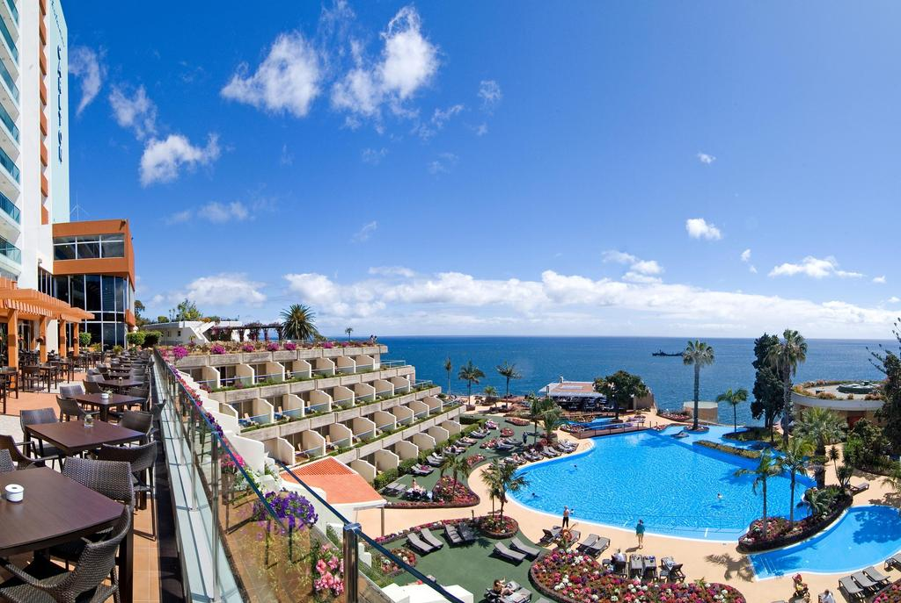

Hotel Riu Palace Madeira
The Hotel Riu Palace Madeira (All Inclusive) is situated on the Portuguese island of Caniço de Baixo in Madeira, with a prime location on the Atlantic Ocean surrounded by the Gulf Stream, which guarantees warm summers and mild winters, making this island a popular tourist destination all year round.
The service provided to you invites you to enjoy the quality and comfort that RIU always guarantees its guests. For this reason, this Palace offers the best facilities to guarantee you relaxing holidays with your family, as a couple or with friends. It includes two outdoor pools, an indoor pool, sauna, gym and the “River Stone” health and beauty centre with a range of different treatments.
The Hotel Riu Palace Madeira is also the perfect place for having fun and enjoying sports as it offers table tennis, a gym and two nearby Golf courses for golf lovers. At the beach, you can go diving and see wonderful sights in the Atlantic Ocean. This island is full of spots with incredible views.
 Hotel Riu Palace Madeira, Portugal
Hotel Riu Palace Madeira, Portugal
Pestana Carlton Madeira Ocean Resort
Pestana Palm Gardens promises you the “time of your life” if you spend your Portuguese beach holiday with them. One thing for sure, this four-star resort at Carvoeiro offers stunning views from its position atop a cliff overlooking the ocean.
Facilities include carefully manicured gardens, tennis court, outdoor swimming pools (one is for children) and table tennis. Two championship golf courses are a 10-minute drive away. It’s a three-minute walk to the beach at Vale do Covo. Guest rooms have terraces or balconies.

Pestana Carlton Madeira Ocean Resort, Portugal
©2019 Vacation Spots
Top